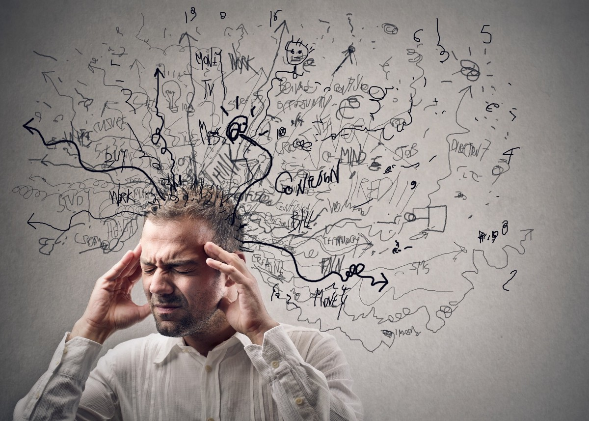
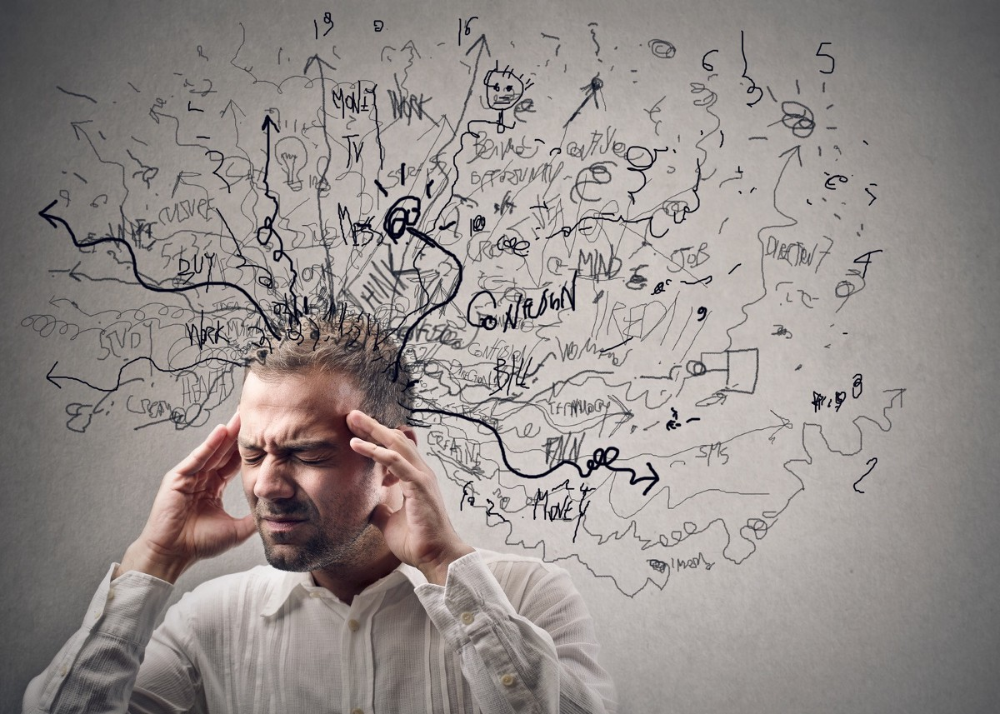

İçerik
 


Karşınıza çıkan bu web sitesinde temel olarak kendimden, hobilerimden, ilgi alanlarımdan, yapay zekaya olan ilgimden ve projelerimden bahsetmek isterim. Bu web sitesi toplam 5 kısımdan oluşmaktadır ve bunlardan ilk kısmı siz ziyaretçileri karşılayan ana sayfa ekranıdır. Bir diğer kısmı ise size kendimi tanıtacağım ben kimim ekranıdır. Diğer bölüm ise benim en çok anlatmayı istediğim hobiler bölümüdür. Son iki bölüm ise ilgi alanlarımdan oluşan yapay zeka ve projeler bölümleridir. Bu web sitesi sayesinde siz okuyucular beni daha yakından tanıyabileceksiniz. Şimdiden iyi okumalar dilerim.